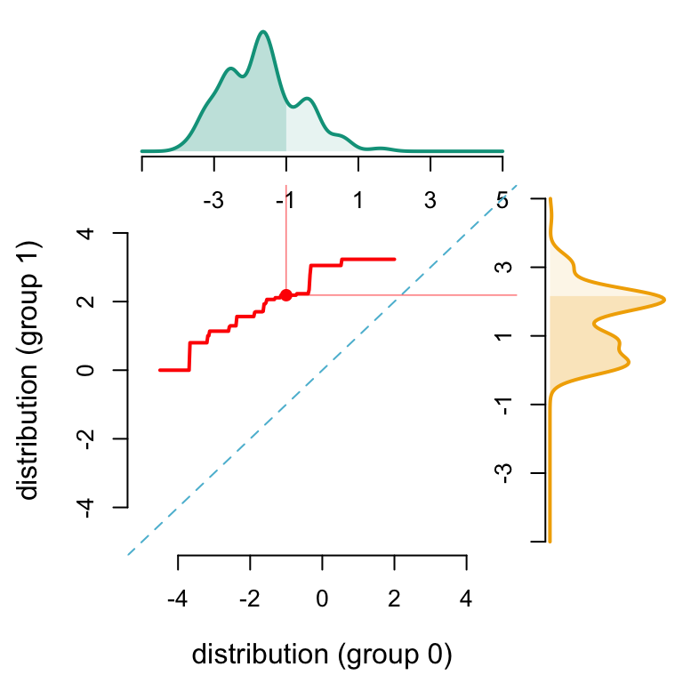
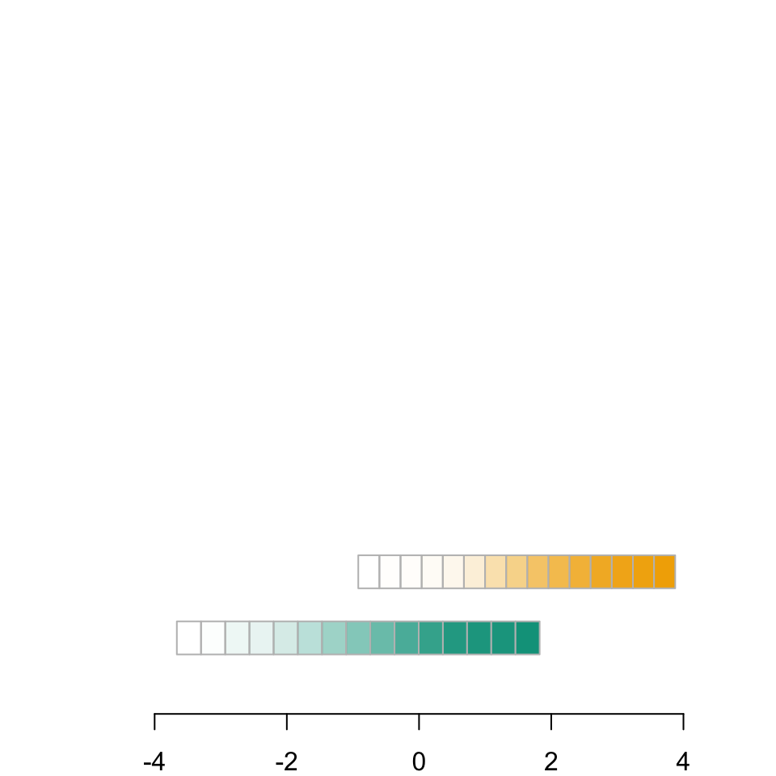
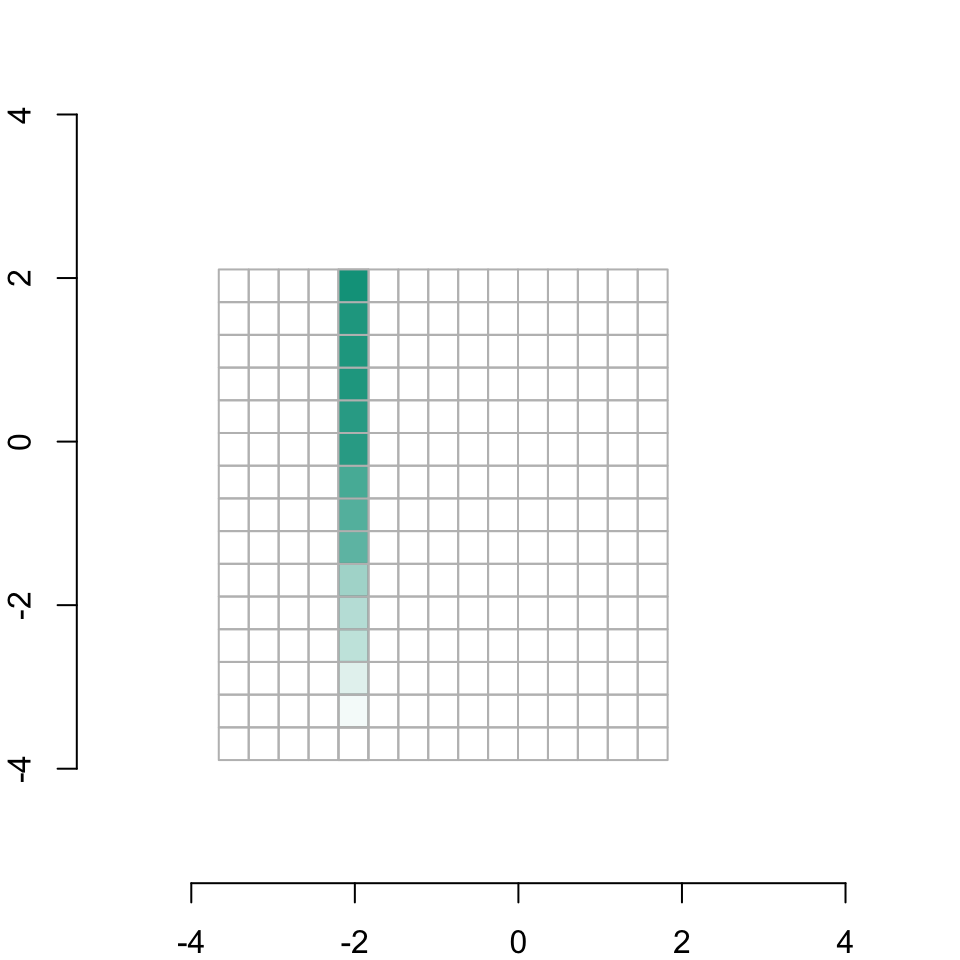

This chapter demonstrates the sequential transport methodology applied to simulated bivariate Gaussian distributions. The sensitive attribute \(S \in \left\{0,1\right\}\) is a binary variable, with each group \(S=0\) and \(S=1\), corresponding to a distinct bivariate Gaussian distribution. The objective is to transport \(\boldsymbol{X} = (X_1,X_2)\) from group \(S=0\) to group \(S=1\) and analyze the effects on predictions \(\hat{Y}\) obtained from a binary classifier. Here, the binary response variable \(Y\) is simulated using a logistic regression model based on the covariates \((S,\boldsymbol{X})\).
We start by drawing two bivariate Gaussian distributions, each reflecting one group from the sensitive attribute \(S \in \left\{0,1\right\}\).
# Number of observations per groupn <-100# First bivariate Gaussian distribution: group S=0M0 <-c(-1,-1)S0 <-matrix(c(1,.5,.5,1)*1.2^2,2,2)X0 <- mnormt::rmnorm(n, M0, S0)D_SXY_0 <-data.frame(S =0,X1 = X0[,1],X2 = X0[,2])# Second bivariate Gaussian distribution: group S=1M1 <-c(1.5,1.5)S1 <-matrix(c(1,-.4,-.4,1)*.9^2,2,2)X1 <- mnormt::rmnorm(n, M1, S1)D_SXY_1 <-data.frame(S =1,X1 = X1[,1],X2 = X1[,2])
Then, we simulate a binary response variable with a logistic model depending of covariates \((S,\boldsymbol{X})\).
# Drawing random binary response variable Y with logistic model for each groupeta_0 <- (D_SXY_0$X1*1.2+D_SXY_0$X2/2*.8)/2eta_1 <- (D_SXY_1$X1*.8+D_SXY_1$X2/2*1.2)/2p_0 <-exp(eta_0)/(1+exp(eta_0))p_1 <-exp(eta_1)/(1+exp(eta_1))D_SXY_0$Y <-rbinom(n, size=1, prob = p_0)D_SXY_1$Y <-rbinom(n, size=1, prob = p_1)# Final dataframeD_SXY <-rbind(D_SXY_0,D_SXY_1)
The contour lines of both bivariate Gaussian densities (corresponding to groups \(S=0\) and \(S=1\)) are displayed in the following graph.
Display the codes used to create the Figure
D_SXY0 <- D_SXY[D_SXY$S ==0,]D_SXY1 <- D_SXY[D_SXY$S ==1,]# Computation of smoothing parameters (bandwidth) for kernel density estimationH0 <-Hpi(D_SXY0[,c("X1","X2")])H1 <-Hpi(D_SXY1[,c("X1","X2")])# Calculating multivariate densities in each group S=0 and S=1f0_2d <-kde(D_SXY0[,c("X1","X2")], H = H0, xmin =c(-5,-5), xmax =c(5,5))f1_2d <-kde(D_SXY1[,c("X1","X2")], H = H1, xmin =c(-5,-5), xmax =c(5,5))# Plotting densitiespar(mar =c(2,2,0,0))contour(f0_2d$eval.point[[1]], f0_2d$eval.point[[2]], f0_2d$estimate, col = colors["A"], axes =FALSE, xlab ="", ylab ="")axis(1)axis(2)contour(f1_2d$eval.point[[1]], f1_2d$eval.point[[2]], f1_2d$estimate, col = colors["B"], add=TRUE)# Display one individual on the graph in group S=0points(-2,-1,pch=19)
2.2 Sequential Transport
In this part, we apply the sequential transport methodology by using the function defined in file utils.R.
In the following, the different transport maps are defined:
T_X1: function to transport \(X_1=x_1\) from group \(S=0\) to \(X_1=x_1^*\) from group \(S=1\),
T_X2: function to transport \(X_2=x_2\) from group \(S=0\) to \(X_2=x_2^*\) from group \(S=1\),
T_X2_c_X1: function to transport \(X_2=x_2|X_1=x_1\) from group \(S=0\) to \(X_2=x_2^*|X_1=x_1^*\) from group \(S=1\),
T_X1_c_X2: function to transport \(X_1=x_1|X_2=x_2\) from group \(S=0\) to \(X_1=x_1^*|X_2=x_2^*\) from group \(S=1\).
data <- D_SXY# Transform S to apply fonction_transport from utils.Rdata <- data |>mutate(S =ifelse(S ==0, "Black", "White"))# Parameters for the sequential transport algorithmdata <- D_SXYS_0 <-0# source distribution (S=1 is the target distribution)n_grid <-500# Number of bins to split each covariateh <- .2# Range extension window for each covariated <- .5# Neighbourhood for conditioning# Defining transport functionsseq_functions <-transport_function(data = data, S_0 = S_0, n_grid = n_grid, h = h, d = d)T_X1 <- seq_functions$Transport_x1T_X2 <- seq_functions$Transport_x2T_X2_c_X1 <- seq_functions$Transport_x2_cond_x1T_X1_c_X2 <- seq_functions$Transport_x1_cond_x2
We start by applying function T_X1 above to transport only on the variable \(X_1\). We will depict the resulting mapping for all observations. The densities of \(X_1\) given groups \(S=0\) and \(S=1\) are calculated.
In the following graphs, the example of the transportation of one individual with \(S=0\) will be displayed:
# Individual from subset S=0 to transportx1 <--2x2 <--1x1_star <-T_X1(x1)x2_c_x1_star =T_X2_c_X1(x2, x1)
We also calculate the indices of \(X_1\) and \(X_2\) grids that are below this individual (\(x_1\) and \(x_2\)) and its counterfactual (\(x_1^*\) and \(x_2^*\)) in order to plot the cdf’s of \(X_1\) and \(X_2|X_1\) in both subsets \(S=0\) and \(S=1\) in the following graphs:
# Define indices of X1 grid idx1 <-which(d_0$x <= x1)idx1_star <-which(d_0$x <= x1_star)# Define indices of X2|X1 grid idx2 <-which(d_0$x <= x2)idx2_star <-which(d_0$x <= x2_c_x1_star)
Here, we plot the optimal transport curve for \(X_1\) from subset \(S=0\) to subset \(S=1\) with the densities corresponding to each subset. Additionnally, the result for the individual from above is displayed.
Display the codes used to create the Figure
# Graph parameterspar(mar =c(2,2,0,0))limA <-c(-5, 5)limB <-c(-5, 5) limY <-c(0, .5)lab <-c("A", "B")sub <-6{ mat <-matrix(c(1, 2, 0, 3), 2)par(mfrow =c(2, 2))layout(mat, c(3.5, 1), c(1, 3))par(mar =c(0.5, 4.5, 0.5, 0.5))}# Plot density of X1 in subset S=0plot(d_0$x, d_0$y, type ="l", col = COLORS[lab[1]], lwd =2,axes =FALSE, xlab ="", ylab ="", xlim = limA, ylim = limY)polygon(c(min(d_0$x), d_0$x, max(d_0$x)), c(0, d_0$y, 0), col = scales::alpha(COLORS[lab[1]], 0.1), border =NA)# Plot cdf of X1 in subset S=0polygon(c(min(d_0$x), d_0$x[idx1], max(d_0$x[idx1])),c(0,d_0$y[idx1],0),col = scales::alpha(colors["A"],.2),border =NA)# Add x-axis for density and cdfaxis(1, at =seq(limA[1], limA[2], length = sub), label =c(NA, seq(limA[1], limA[2], length = sub)[-1]))# Plot transport line on X1 from S=0 to S=1par(mar =c(4.5, 4.5, 0.5, 0.5))u_grid <-seq(0, 1, length=261)u_grid <- u_grid[2:260]plot(x1_grid_t, x1_star_grid_t, col = COLORS["1"], lwd =2, type ="l", xlab ="", ylab ="", xlim = limA, ylim = limB, axes =FALSE)# Identity function lineabline(a =0, b =1, col = COLORS["0"], lty =2)# Add x-axis and y-axis of the transport lineaxis(1)axis(2)# Legendmtext("distribution (group 0)", side =1, line =3, col ="black")mtext("distribution (group 1)", side =2, line =3, col ="black")# Plot individual from subset S=0points(x1, x1_star, pch =19, col = COLORS["1"])segments(x1, x1_star, x1, 10, lwd = .4, col = COLORS["1"])segments(x1, x1_star, 10, x1_star, lwd = .4, col = COLORS["1"])# Plot density of X1 in subset S=1par(mar =c(4.5, 0.5, 0.5, 0.5))plot(d_1$y, d_1$x, type ="l", col = COLORS[lab[2]], lwd =2, ylim = limB, xlim = limY, xlab ="", ylab ="", axes =FALSE)polygon(c(0, d_1$y, 0), c(min(d_1$x), d_1$x, max(d_1$x)), col = scales::alpha(COLORS[lab[2]], 0.1), border =NA)# Plot cdf of X1 in subset S=1polygon(c(0, d_1$y[idx1_star], 0),c(min(d_1$x), d_1$x[idx1_star], max(d_1$x[idx1_star])),col = scales::alpha(colors["B"],.2),border =NA)# Add y-axis for density and cdfaxis(2, at =seq(limB[1], limB[2], length = sub), label =c(NA, seq(limB[1], limB[2], length = sub)[-c(1, sub)], NA))
Then we plot the counterfactual obtained from sequential transport on \(X_1\) (which corresponds to univariate optimal transport) for the individual, on the contour lines of both groups \(S=0\) and \(S=1\).
Display the codes used to create the Figure
# Graph parameterspar(mar =c(2,2,0,0))# Contour line of bivariate Gaussian density for subset S=0contour(f0_2d$eval.point[[1]], f0_2d$eval.point[[2]], f0_2d$estimate, col = scales::alpha(colors["A"],.4),axes =FALSE, xlab ="", ylab ="")# Contour line of bivariate Gaussian density for subset S=1contour(f1_2d$eval.point[[1]], f1_2d$eval.point[[2]], f1_2d$estimate, col = scales::alpha(colors["B"],.4), add =TRUE)# Add x-axis and y-axisaxis(1)axis(2)# Plot density of X1 for subset S=0polygon(c(min(d_0$x), d_0$x, max(d_0$x)), c(0, d_0$y, 0)*5-5, col = scales::alpha(COLORS[lab[1]], 0.4), border =NA)# Add cdf of X1 for subset S=0polygon(c(min(d_0$x), d_0$x[idx1], max(d_0$x[idx1])),c(0, d_0$y[idx1],0)*5-5,col = scales::alpha(colors["A"], 0.4),border =NA)# Plot density of X1 for subset S=1polygon(c(min(d_1$x), d_1$x, max(d_1$x)),c(0, d_1$y, 0)*5-5, col = scales::alpha(COLORS[lab[2]], 0.4), border =NA)# Add cdf of X1 for subset S=1polygon(c(min(d_1$x), d_1$x[idx1_star], max(d_1$x[idx1_star])),c(0, d_1$y[idx1_star],0)*5-5,col = scales::alpha(colors["B"],.4),border =NA)# Plot example individual from subset S=0points(x1, x2, pch =19)abline(v = x1, lwd = .4, col = COLORS["A"])abline(v = x1_star, col ="black", lwd = .5)
Next, we plot the optimal transport curve for \(X_2|X_1\) from subset \(S=0\) to subset \(S=1\) with the densities corresponding to each subset. Additionnally, the result for the individual from above is displayed. We use the same graph parameters than above.
We start by computing sequential transport for the example individual from subset \(S=0\) (find the transport of \(X_2=x_2|X_1=x_1\)). For this, we need to compute different weights, defined with a Gaussian kernel, to calculate density of \(X_2\) conditioned on the value \(X_1=x_1\) (resp. \(X_1=x_1^*\)) for subset \(S=0\) (resp. \(S=1\)).
# Calculation of transport line for X2|X1 on a grid for X2x2_grid_t <-seq(-4.5, 2, length=251)x2_star_grid_t <-Vectorize(function(x) T_X2_c_X1(x, x1))(x2_grid_t)# Standard deviation for gaussian kernel (bandwidth)h = .25# Subset S=0w0 <-dnorm(D_SXY0[,"X1"], x1, h)w0 <- w0/sum(w0)d0x2cx1 <-function(x) density(D_SXY0[,"X2"],bw = .3,weights = w0,from = x, to = x, n =1)$y# We use the same grid for X1 and X2 because they are both defined on the same rangedensity_x2cx1_0 <-Vectorize(d0x2cx1)(d_0$x)# Subset S=1w1 <-dnorm(D_SXY0[,"X1"], x1_star, h)w1 <- w1/sum(w1)d1x2cx1 <-function(x) density(D_SXY1[,"X2"],bw = .3, weights = w1, from = x, to = x, n =1)$ydensity_x2cx1_1 <-Vectorize(d1x2cx1)(d_1$x)
Here, we plot the optimal transport curve for \(X_2|X_1\) from subset \(S=0\) to subset \(S=1\) with the densities corresponding to each subset (calculated with Gaussian kernels). Additionnally, the result for the individual from above is displayed.
Display the codes used to create the Figure
# Graph parameters{ mat <-matrix(c(1, 2, 0, 3), 2)par(mfrow =c(2, 2))layout(mat, c(3.5, 1), c(1, 3))par(mar =c(0.5, 4.5, 0.5, 0.5))}# Plot density of X2|X1 in subset S=0 with weights w0plot(d_0$x, density_x2cx1_0, type ="l", col = COLORS[lab[1]], lwd =2,axes =FALSE, xlab ="", ylab ="", xlim = limA, ylim = limY)polygon(c(min(d_0$x), d_0$x, max(d_0$x)), c(0, density_x2cx1_0, 0), col = scales::alpha(COLORS[lab[1]], 0.1), border =NA)# Plot cdf of X1 in subset S=0 with weights w0polygon(c(min(d_0$x), d_0$x[idx2], max(d_0$x[idx2])), c(0, density_x2cx1_0[idx2], 0),col = scales::alpha(colors["A"],.2),border =NA)# Add x-axis for cdf and densityaxis(1, at =seq(limA[1], limA[2], length = sub), label =c(NA, seq(limA[1], limA[2], length = sub)[-1]))# Plot transport line for X2|X1 from subset S=0 to S=1par(mar =c(4.5, 4.5, 0.5, 0.5))plot(x2_grid_t, x2_star_grid_t, col = COLORS["1"], lwd =2,type ="l", xlab ="", ylab ="", xlim = limA, ylim = limB,axes =FALSE)abline(a =0, b =1, col = COLORS["0"], lty =2)# Add x-axis and y-axisaxis(1)axis(2)# Legendmtext("distribution (group 0)", side =1, line =3, col ="black")mtext("distribution (group 1)", side =2, line =3, col ="black")# Plot example individual on the transport linepoints(x2, x2_c_x1_star, pch =19, col = COLORS["1"])segments(x2, x2_c_x1_star, x2, 10, lwd = .4, col = COLORS["1"])segments(x2, x2_c_x1_star, 10, x2_c_x1_star, lwd = .4, col = COLORS["1"])# Plot density of X2|X1 in subset S=1 with weights w1par(mar =c(4.5, 0.5, 0.5, 0.5))plot(density_x2cx1_1, d_1$x, type ="l", col = COLORS[lab[2]], lwd =2,axes =FALSE, xlab ="", ylab ="", xlim = limY, ylim = limB)polygon(c(0, density_x2cx1_1, 0), c(min(d_1$x), d_1$x, max(d_1$x)),col = scales::alpha(COLORS[lab[2]], 0.1), border =NA)# Plot cdf of X1 in subset S=1 with weights w1polygon(c(0, density_x2cx1_1[idx2_star], 0), c(min(d_1$x), d_1$x[idx2_star], max(d_1$x[idx2_star])),col = scales::alpha(colors["B"], .2),border =NA)# Add y-axis for cdf and densityaxis(2, at =seq(limB[1], limB[2], length = sub), label =c(NA, seq(limB[1], limB[2], length = sub)[-c(1, sub)], NA))

Then we plot the counterfactual obtained from sequential transport on \(X_2|X_1\) (which corresponds to univariate conditional transport) for the individual, on the contour lines of both groups \(S=0\) and \(S=1\).
Display the codes used to create the Figure
# Graph parameterspar(mar =c(2, 2, 0, 0))# Contour lines for bivariate density of gaussian distribution in subset S=0contour(f0_2d$eval.point[[1]], f0_2d$eval.point[[2]], f0_2d$estimate, col = scales::alpha(colors["A"],.4),axes =FALSE, xlab ="", ylab ="")# x-axis and y-axisaxis(1)axis(2)# Contour lines for bivariate density of gaussian distribution in subset S=1contour(f1_2d$eval.point[[1]], f1_2d$eval.point[[2]], f1_2d$estimate, col = scales::alpha(colors["B"],.4), add=TRUE)# Plot the density of X2|X1 in subset S=0 with weights w0polygon(c(0, density_x2cx1_0, 0)*5-2, c(-5, d_0$x, 5), col = scales::alpha(COLORS[lab[1]], 0.4), border =NA)# Plot the cdf of X2|X1 in subset S=0polygon(c(0, density_x2cx1_0[idx2], 0)*5-2,c(min(d_0$x), d_0$x[idx2], max(d_0$x[idx2])),col = scales::alpha(colors["A"],.4),border =NA)# Plot crossing lines (X1, X2) at example individual from subset S=0abline(v = x1, col = COLORS["A"], lwd = .5)abline(h = x2, col = COLORS[lab[1]], lwd = .5)points(x1, x2, pch=19)# Plot the density of X2|X1 in subset S=1 with weights w1polygon(c(0, density_x2cx1_1, 0)*5+x1_star, c(-5, d_1$x, 5), col = scales::alpha(COLORS[lab[2]], 0.4), border =NA)# Plot the cdf of X2|X1 in subset S=1polygon(c(0, density_x2cx1_1[idx2_star], 0)*5+x1_star,c(min(d_1$x), d_1$x[idx2_star], max(d_1$x[idx2_star])),col = scales::alpha(colors["B"],.4),border =NA)# Plot crossing lines (X1, X2) at example individual when transported to subset S=1abline(v = x1_star, col = COLORS[lab[2]], lwd = .5)abline(h = x2_c_x1_star, col ="black", lwd = .5)points(x1_star, x2_c_x1_star, pch=19)
2.3 Faster Sequential Transport
In this part, we establish grids for \(X_1\) and \(X_2\) to calculate and store the cdf’s and quantile functions of the variables \(X_1\), \(X_2\), \(X_2|X_1\) and \(X_1|X_2\) for both subsets \(S=0\) and \(S=1\). This approach allows us to apply these functions to individuals based on their positions within the grids, rather than having to compute them each time. Instead of first calculating the cdf at \(X_1=x_1\) and then transporting it, we directly apply the cdf and quantile functions at the corresponding \(X_1\) grid position near \(x_1\). Then, for transporting \(X_2|X_1\), we start by storing the relevant cdf’s and quantile functions in a matrix, with rows corresponding to grid values for \(X_1\) and columns to grid values for \(X_2\). To apply the conditional cdf and quantile function to an individual \((s=0,x_1,x_2)\) i.e., sequential transport, rather than relying on Gaussian weights to define a neighborhood around \(x_1\), we define a window of width h around the midpoints of the grid cells for \(X_1\) and calculate cdf of \(X_2\) on this space.
Here, we redefine the outputs of sequential transport function in order to plot the different grids and associated cdf’s for \(X_2\) and \(X_1\) in both subsets \(S=0\) and \(S=1\).
#' Sequential transport#'#' @param data dataset with three columns:#' - S: sensitive attribute, transport from S_0 to the other group#' - X1: first predictor, assumed to be causally linked to S#' - X2: second predictor, assumed to be causally linked to S and X1#' @param S_0 Modality called group 0 to (source distribution)#' @param number of cells in each dimension (default to 15)#' @param h small value added to extend the area covered by the grid (default#' to .2)#' @param d neighborhood weight when conditioning by x1 (default to .5)transport_function2 <-function(data, S_0,n_grid =15,h = .2,d = .5) {# Subset of the data: 0 for Black, 1 for White D_SXY_0 <- data[data$S == S_0, ] D_SXY_1 <- data[data$S != S_0, ]# Coordinates of the cells of the grid on subset of 0 (Black) vx1_0 <-seq(min(D_SXY_0$X1) - h, max(D_SXY_0$X1) + h, length = n_grid +1) vx2_0 <-seq(min(D_SXY_0$X2) - h, max(D_SXY_0$X2) + h, length = n_grid +1)# and middle point of the cells vx1_0_mid <- (vx1_0[2:(1+n_grid)]+vx1_0[1:(n_grid)]) /2 vx2_0_mid <- (vx2_0[2:(1+n_grid)]+vx2_0[1:(n_grid)]) /2# Coordinates of the cells of the grid on subset of 1 (White) vx1_1 <-seq(min(D_SXY_1$X1) -h, max(D_SXY_1$X1) + h, length = n_grid +1) vx1_1_mid <- (vx1_1[2:(1+ n_grid)] + vx1_1[1:(n_grid)]) /2# and middle point of the cells vx2_1 <-seq(min(D_SXY_1$X2) - h, max(D_SXY_1$X2) + h, length = n_grid +1) vx2_1_mid <- (vx2_1[2:(1+ n_grid)] + vx2_1[1:(n_grid)]) /2# Creation of the grids for the CDF and Quantile function# init with NA values# One grid for X1 and X2, on both subsets of the data (Black/White) F1_0 <- F2_0 <- F1_1 <- F2_1 <-matrix(NA, n_grid, n_grid) Q1_0 <- Q2_0 <- Q1_1 <- Q2_1 <-matrix(NA, n_grid, n_grid)# Empirical CDF for X1 on subset of Black FdR1_0 <-Vectorize(function(x) mean(D_SXY_0$X1 <= x)) f1_0 <-FdR1_0(vx1_0_mid)# Empirical CDF for X2 on subset of Black FdR2_0 <-Vectorize(function(x) mean(D_SXY_0$X2 <= x)) f2_0 <-FdR2_0(vx2_0_mid)# Empirical CDF for X1 on subset of White FdR1_1 <-Vectorize(function(x) mean(D_SXY_1$X1 <= x)) f1_1 <-FdR1_1(vx1_1_mid)# Empirical CDF for X2 on subset of White FdR2_1 <-Vectorize(function(x) mean(D_SXY_1$X2 <= x)) f2_1 <-FdR2_1(vx2_1_mid) u <- (1:n_grid) / (n_grid +1)# Empirical quantiles for X1 on subset of Black Qtl1_0 <-Vectorize(function(x) quantile(D_SXY_0$X1, x)) q1_0 <-Qtl1_0(u)# Empirical quantiles for X2 on subset of Black Qtl2_0 <-Vectorize(function(x) quantile(D_SXY_0$X2, x)) q2_0 <-Qtl2_0(u)# Empirical quantiles for X1 on subset of White Qtl1_1 <-Vectorize(function(x) quantile(D_SXY_1$X1, x)) q1_1 <-Qtl1_1(u)# Empirical quantiles for X2 on subset of White Qtl2_1 <-Vectorize(function(x) quantile(D_SXY_1$X2, x)) q2_1 <-Qtl2_1(u)for(i in1:n_grid) {# Subset of Black idx1_0 <-which(abs(D_SXY_0$X1 - vx1_0_mid[i]) < d) FdR2_0 <-Vectorize(function(x) mean(D_SXY_0$X2[idx1_0] <= x)) F2_0[, i] <-FdR2_0(vx2_0_mid) Qtl2_0 <-Vectorize(function(x) quantile(D_SXY_0$X2[idx1_0], x)) Q2_0[, i] <-Qtl2_0(u) idx2_0 <-which(abs(D_SXY_0$X2 - vx2_0_mid[i]) < d) FdR1_0 <-Vectorize(function(x) mean(D_SXY_0$X1[idx2_0] <= x)) F1_0[, i] <-FdR1_0(vx1_0_mid) Qtl1_0 <-Vectorize(function(x) quantile(D_SXY_0$X1[idx2_0], x)) Q1_0[, i] <-Qtl1_0(u)# Subset of White idx1_1 <-which(abs(D_SXY_1$X1 - vx1_1_mid[i]) < d) FdR2_1 <-Vectorize(function(x) mean(D_SXY_1$X2[idx1_1] <= x)) F2_1[, i] <-FdR2_1(vx2_1_mid) Qtl2_1 <-Vectorize(function(x) quantile(D_SXY_1$X2[idx1_1], x)) Q2_1[, i] <-Qtl2_1(u) idx2_1 <-which(abs(D_SXY_1$X2-vx2_1_mid[i])<d) FdR1_1 <-Vectorize(function(x) mean(D_SXY_1$X1[idx2_1] <= x)) F1_1[, i] <-FdR1_1(vx1_1_mid) Qtl1_1 <-Vectorize(function(x) quantile(D_SXY_1$X1[idx2_1], x)) Q1_1[, i] <-Qtl1_1(u) }# Transport for X2 T2 <-function(x2) { i <-which.min(abs(vx2_0_mid - x2)) p <- f2_0[i] i <-which.min(abs(u - p)) x2star <- q2_1[i] x2star }# Transport for X1 T1 <-function(x1) { i <-which.min(abs(vx1_0_mid - x1)) p <- f1_0[i] i <-which.min(abs(u - p)) x1star <- q1_1[i] x1star }# Transport for X2 conditional on X1 T2_cond_x1 <-function(x2, x1) { k0 <-which.min(abs(vx1_0_mid - x1)) k1 <-which.min(abs(vx1_1_mid -T1(x1))) i <-which.min(abs(vx2_0_mid - x2)) p <- F2_0[i, k0] i <-which.min(abs(u - p)) x2star <- Q2_1[i, k1] x2star }# Transport for X1 conditional on X2 T1_cond_x2 <-function(x1, x2) { k0 <-which.min(abs(vx2_0_mid - x2)) k1 <-which.min(abs(vx2_1_mid -T(x2))) i <-which.min(abs(vx1_0_mid - x1)) p <- F1_0[i, k0] i <-which.min(abs(u - p)) x1star <- Q1_1[i, k1] x1star }list(Transport_x1 = T1,Transport_x2 = T2,Transport_x1_cond_x2 = T1_cond_x2,Transport_x2_cond_x1 = T2_cond_x1,vx1_0 = vx1_0,vx1_0_mid = vx1_0_mid,vx1_1 = vx1_1,vx1_1_mid = vx1_1_mid,vx2_0 = vx2_0,vx2_1 = vx2_1,f1_0 = f1_0,f1_1 = f1_1,F2_0 = F2_0,F2_1 = F2_1 )}# Application on the Gaussian databasen_grid <-15seq_functions_grids <-transport_function2(D_SXY, S_0 = S_0, n_grid = n_grid)
We first depict the grid for \(X_1\), computed on our Gaussian database, with the associated cdf’s in subsets \(S=0\) and \(S=1\).
# Grid for X1 in subset S=0vx1_0 <- seq_functions_grids$vx1_0# Midpoints of the cellsvx1_0_mid <- seq_functions_grids$vx1_0_mid# cdf (marginal) of X1 in subset S=0f1_0 <- seq_functions_grids$f1_0# Grid for X1 in subset S=1vx1_1 <- seq_functions_grids$vx1_1# Midpoints of the cellsvx1_1_mid <- seq_functions_grids$vx1_1_mid# cdf (marginal) of X1 in subset S=1f1_1 <- seq_functions_grids$f1_1# Add x-axispar(mar =c(2,2,0,0))plot(d_0$x, d_0$x*0, xlab ="", ylab ="", axes =FALSE, col =NA, ylim =c(.5, 2.5))axis(1)# Plot the cdf of X1 in subset S=0 with color scalefor(i in1:n_grid) {rect(vx1_0[i], .7, vx1_0[i+1], 0.6,col = scales::alpha(COLORS["A"], f1_0[i]),border ="grey")}# Plot the cdf of X1 in subset S=1 with color scalefor(i in1:n_grid) {rect(vx1_1[i], .8, vx1_1[i+1], .9,col = scales::alpha(COLORS["B"], f1_1[i]),border ="grey")}

Next we display the matrices of cdf’s for \(X_2|X_1\) in both subsets \(S=0\) and \(S=1\):
# Grid for X2 in subset S=0vx2_0 <- seq_functions_grids$vx2_0# cdf (conditional) of X2|X1 in subset S=0 (matrix)F2_0 <- seq_functions_grids$F2_0# Grid for X2 in subset S=1vx2_1 <- seq_functions_grids$vx2_1# cdf (conditional) of X2|X1 in subset S=1 (matrix)F2_1 <- seq_functions_grids$F2_1
First, we plot the matrix for subset \(S=0\) and highlight the column corresponding to the cdf of \(X_2|X_1=x_1\) for our example individual:
Display the codes used to create the Figure
# Add x-axis and y-axis (for the matrices with cdf's)par(mar =c(2,2,0,0))plot(d_0$x, d_0$x, xlab ="", ylab ="", axes =FALSE, col =NA)axis(1)axis(2)# Add grid matrix of cdf's for X2|X1 in subset S=0for(i in1:n_grid) {for(j in1:n_grid) {rect(vx1_0[i], vx2_0[j], vx1_0[i+1], vx2_0[j+1],border="grey") }}# Column corresponding to X1=x1i <-which.min(abs(vx1_0_mid-x1))for(j in1:n_grid) {rect(vx1_0[i], vx2_0[j], vx1_0[i+1], vx2_0[j+1],col = scales::alpha(COLORS["A"], F2_0[j,i]),border="grey")}

Next, we plot the matrix for subset \(S=1\) and highlight the column corresponding to the cdf of \(X_2|X_1=x_1^*\) for our example individual:
# Add x-axis and y-axis (for the matrices with cdf's)par(mar =c(2,2,0,0))plot(d_1$x, d_1$x, xlab ="", ylab ="", axes =FALSE, col =NA)axis(1)axis(2)# Add grid matrix of cdf's for X2|X1 in subset S=1for(i in1:n_grid) {for(j in1:n_grid) {rect(vx1_1[i], vx2_1[j], vx1_1[i+1], vx2_1[j+1],border ="grey") }}# Column corresponding to X1=x1_star (i.e., x1 transported)i <-which.min(abs(vx1_1_mid - x1_star))for(j in1:n_grid) {rect(vx1_1[i], vx2_1[j], vx1_1[i+1], vx2_1[j+1],col = scales::alpha(COLORS["B"], F2_1[j,i]),border ="grey")}